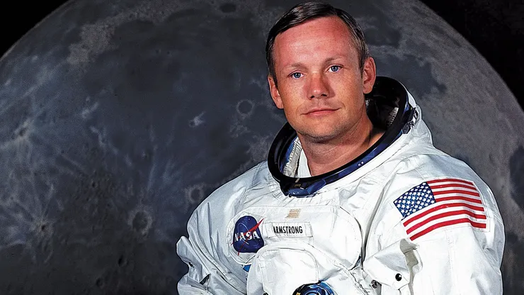

Neil Armstrong and the rest of the Apollo 11 crew stayed a total of 21
hours and 36 minutes on the moon.
The story of an astronaut: a timeline for Neil Armstrong
- 1930, August 5: Neil Armstrong is born
- 1936: First plane ride
- 1947: Goes to college (Purdue University)
- 1949: Goes to war
- 1955: Graduates from college
- 1955: Joins NASA
- 1956: Marries Janet Shearon
- 1957: Neil Armstrong’s son is born
- 1959: Daughter is born
-
1962: His daughter, Karen, dies of DIPG, a rare, fast-growing
brain tumor. This tragic event on Neil Armstrong’s timeline will
stay with him for the rest of his life. According to the biography
written by Jay Barbree, Karen never left her father’s thoughts,
and her memory fueled him in space.
- 1962: Neil enters the space program
- 1966: Armstrong’s first flight in space
-
1969: Neil Armstrong becomes the first man to step on the moon
- 1971: Leaves NASA to start teaching at UC
-
1982: Becomes chairman of Computing Technologies for Aviation
- 1986: Investigates the Challenger mission
- 1994: Divorces Janet
- 1994: Marries Carol Held Knight
-
1999: Receives the Langley Medal for outstanding contributions to
astronautics and aeronautics
- 2006: Gives rare TV interview
- 2010: Speaks out against cuts to the space program
-
2012, August 25: Dies at age 82 because of complications resulting
from heart surgery
“That's one small step for man, one giant leap for mankind.”
--Neil Armstrong